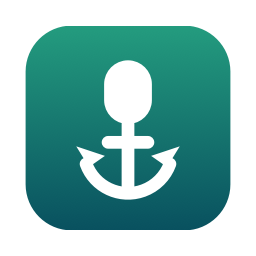
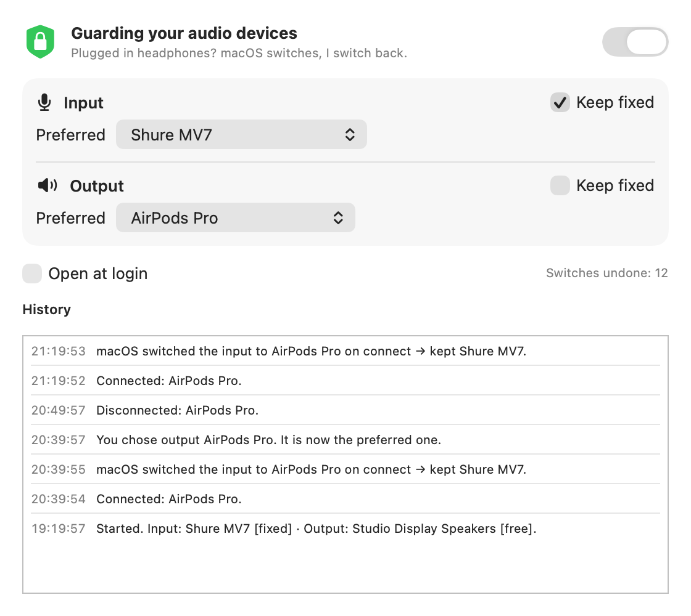
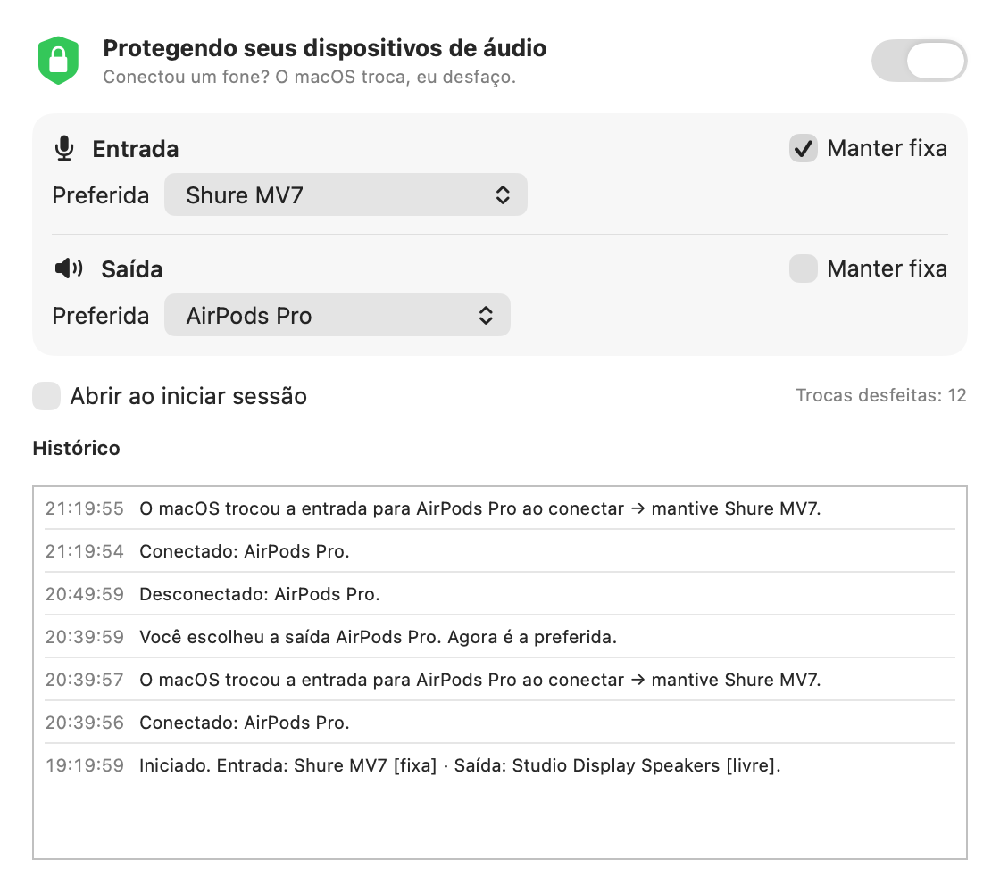

Every time you connect AirPods or a headset, macOS quietly switches your microphone and speakers to it. FixMacAudioInput is a tiny menu bar app that switches them right back.
You set up a good microphone. Then you put on headphones to listen, and macOS decides you also want to talk through them.
AirPods, a Bluetooth headset, a USB dongle — anything with a microphone.
Input and output jump to the new device. On Bluetooth, using its mic drops audio to low-quality "call mode".
In under a second your previous microphone is back. No clicks, no settings to visit.
It tells an automatic switch apart from one you made yourself, so it never fights you.
A switch to a device connected seconds ago is macOS's doing — it gets reverted.
Pick a device yourself, anywhere, and it becomes the new preferred one. Nothing to configure.
Only the microphone is pinned by default, so your headphones still play sound. Pin the output too if you like.
Unplug your USB mic and plug it back later: it is restored automatically.
English, Português, Español, Français and Deutsch, following your system language.
Swift + SwiftUI, universal binary, ~1 MB. No network, no microphone access, no tracking, no dependencies.
Open it from the menu bar icon. Every action is listed, and also written to ~/Library/Logs/FixMacAudioInput.log.


The app listens to CoreAudio's default-device and device-list notifications and applies four rules.
| When | FixMacAudioInput |
|---|---|
| The default changes to a device first seen less than 8 seconds ago | Treats it as automatic and restores your preferred device |
| The default changes to a device that was already connected | Treats it as your choice: it becomes the preferred device |
| Your preferred device is disconnected | Keeps the preference and restores it when the device comes back |
| Protection is paused, or “Keep fixed” is off | Does nothing — just follows whatever is selected |
Edge case: if you manually pick a brand-new device within 8 seconds of connecting it, that looks automatic and gets reverted. Wait a moment, or choose it from the app's menu.
Takes about a minute. Requires macOS 14 Sonoma or later.
xattr -dr com.apple.quarantine /Applications/FixMacAudioInput.appPrefer building it yourself?
git clone https://github.com/pedroberaldo87/FixMacAudioInput.git
cd FixMacAudioInput
./build.sh --installYou can — and macOS will override it again the next time a device connects. That is exactly the behavior this app undoes.
No. It only reads and sets which device is the default, through CoreAudio. It never opens an audio stream, never asks for microphone permission and makes no network connections. The whole source is about 700 lines of Swift; read it.
Yes. By default only the input is pinned, so audio still goes to your headphones. As a bonus, while the headset microphone is not in use, Bluetooth headphones usually stay in their high-quality playback mode.
Choose it in the app's menu (or in Sound settings a few seconds after connecting). It becomes the preferred input until you choose something else. You can also turn off “Keep fixed” or pause protection.
Releases are ad-hoc signed and not notarized (that requires a paid Apple Developer ID). The code is all here and you can build it yourself with one command.
Quit it from the menu, turn off “Open at login”, delete the app and, optionally, its settings and log:
defaults delete br.com.pedroberaldo.FixMacAudioInput
rm ~/Library/Logs/FixMacAudioInput.log